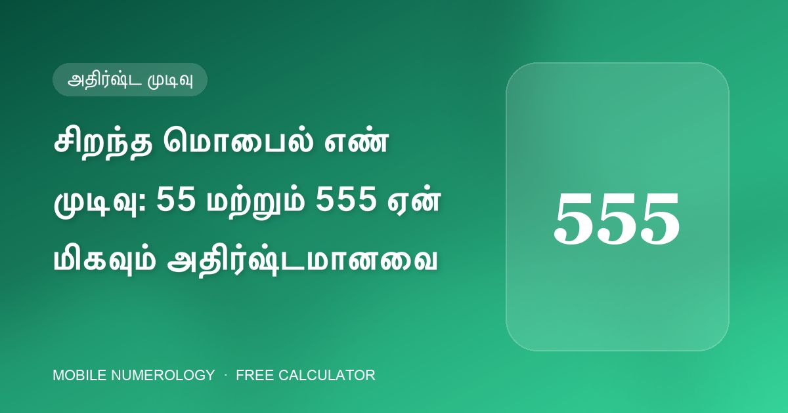

சிறந்த மொபைல் எண் முடிவு: 55 மற்றும் 555 ஏன் மிகவும் அதிர்ஷ்டமானவை

ஒரு மொபைல் எண் கணித நிபுணரிடம் புதிய எண்ணுக்கு எந்த முடிவைத் தேர்வு செய்வார்கள் என்று கேளுங்கள், கிட்டத்தட்ட எப்போதும் ஒரே பதில் கிடைக்கும்: 55 அல்லது 555. அட்வான்ஸ் மொபைல் நியூமராலஜி வகுப்பு 555 இல் முடியும் எண்ணை "சிறந்த முடிவுகளில் ஒன்று" என்கிறது, எங்கள் ஆய்வாளர் அதற்கு அதிகபட்ச அமைப்பு போனஸ் தருகிறது. இதன் பின்னணி இதோ.
5 என்பது புதன் — தொடர்பு, வணிகம் மற்றும் சுதந்திரம்
கால்டியன் எண் கணிதத்தில் இலக்கம் 5 புதனுக்கு உரியது — பேச்சு, வர்த்தகம், விரைவான சிந்தனை மற்றும் தகவமைப்பின் கிரகம். ஃபோன் என்பது உண்மையில் ஒரு தொடர்புச் சாதனம் என்பதால், 5 அதற்கு மிகவும் இயல்பான இலக்கமாகக் கருதப்படுகிறது. இணக்க அட்டவணையில் பகை எண்கள் இல்லாத ஒரே இலக்கம் 5 — இது 1, 2, 3, 5 மற்றும் 6 உடன் நட்பானது, மற்றவற்றுடன் நடுநிலை — எனவே உங்கள் பிறப்பு அல்லது விதி எண் எதுவாக இருந்தாலும் இது பாதுகாப்பான தேர்வு.
கடைசி மூன்று இடங்களில் 5 என்ன செய்கிறது
- 8வது இடம் (தொழில் & ஆரோக்கியம்): 5 தொழில் வெற்றியையும் புகழையும் ஆதரிக்கிறது.
- 9வது இடம் (பொது உறவுகள்): 5 "சிறந்த நிலையில்" உள்ளது — தெரிவுநிலையையும் தொடர்பு வலையையும் உயர்த்துகிறது.
- 10வது இடம் (செல்வம்): மீண்டும் 5 சிறந்தது, பணத்தை இயக்கத்தில் வைக்கிறது.
55 இல் முடிவது இரண்டு முடிவு-சார்ந்த இடங்களை புதனின் இலக்கத்தால் நிரப்புகிறது; 555 இல் முடிவது மூன்றையும்.
5 எங்கே இருக்கக் கூடாது
5 எல்லா இடத்திலும் நல்லதல்ல. 5வது இடத்தில் அது குழந்தை தொடர்பான பிரச்சினைகளுடனும், 6 அல்லது 7வது இடத்தில் திருமணப் பிரச்சினைகளுடனும் இணைக்கப்பட்டுள்ளது, ஏனெனில் புதனின் அமைதியற்ற ஆற்றல் குடும்ப மண்டலத்தைக் குழப்புகிறது. எனவே சிறந்த அமைப்பு: கடைசி இலக்கங்களில் 5, நடுவில் 6 போன்ற அமைதியான ஒன்று.
555 கிடைக்கவில்லை என்றால்?
555 இல் முடியும் எண்கள் VIP எண்களாக விற்கப்படுகின்றன, விலை அதிகமாக இருக்கலாம். விருப்ப வரிசையில் நல்ல மாற்றுகள்:
- 55 இல் முடிவது — கிட்டத்தட்ட அதே வலிமை.
- 6 இல் முடிவது — பணத்திற்கு சிறந்தது, சுக்கிர-நட்பு மக்களுக்கு (பிறப்பு எண் 1, 5, 6, 7) சிறந்தது.
- 9–10வது இடங்களில் 3 அல்லது 7 — வாய்ப்பு, நம்பிக்கை மற்றும் ஆன்மீக லாபம்.
- ஆற்றல் மற்றும் பொது நிலைக்கு 8 அல்லது 9வது இடத்தில் 9.
எந்த முடிவைத் தேர்ந்தெடுத்தாலும், எண்ணின் ஒற்றை இலக்கக் கூட்டுத்தொகை உங்கள் பிறப்பு மற்றும் விதி எண்களுக்கு நட்பாக இருப்பதைச் சரிபார்க்கவும் — சிறந்த முடிவு கூட பகைக் கூட்டுத்தொகையை முழுமையாகக் காப்பாற்ற முடியாது.
30 வினாடிகளில் உங்கள் எண்ணைச் சரிபார்க்கவும்
எங்கள் இலவச கால்குலேட்டர் உங்கள் மொபைல் எண்ணின் 10 இடங்களையும் ஆய்வு செய்து, உங்கள் பிறப்பு & விதி எண்களைக் கண்டறிந்து, அதிர்ஷ்ட பின், கடவுச்சொல், வால்பேப்பர் மற்றும் கவரைப் பரிந்துரைக்கிறது — நீங்கள் உள்ளிடுவது எதுவும் உங்கள் உலாவியை விட்டு வெளியேறாது.
அடிக்கடி கேட்கப்படும் கேள்விகள்
5555 முடிவு 555 ஐ விட சிறந்ததா?
அவசியமில்லை. நன்மை 5 ஆனது 8, 9 மற்றும் 10வது இடங்களில் இருப்பதால் வருகிறது. 7வது இடத்தில் (திருமண வாழ்க்கை) 5 திருமண உராய்வை உருவாக்கலாம், எனவே 555 தான் சரியான சமநிலை.
55 இல் முடியும் எண் வணிகத்திற்கு நல்லதா?
5 என்பது புதன், வர்த்தகம் மற்றும் தொடர்பின் கிரகம், எனவே கடைசியில் 55 வணிக உரிமையாளர்கள், விற்பனையாளர்கள் மற்றும் ஆலோசகர்களுக்கு மிகவும் பரிந்துரைக்கப்படும் முடிவுகளில் ஒன்று.
என் எண் 55 இல் முடிகிறது ஆனால் கூட்டுத்தொகை 8 — இன்னும் அதிர்ஷ்டமா?
முடிவு உதவுகிறது, ஆனால் கூட்டுத்தொகை 8 பிறப்பு எண்கள் 1, 2, 4, 8 மற்றும் 9 க்கு பகை எண். உங்கள் பிறந்த தேதிக்கான நிகர விளைவைப் பார்க்க முழு ஆய்வை இயக்கவும்.